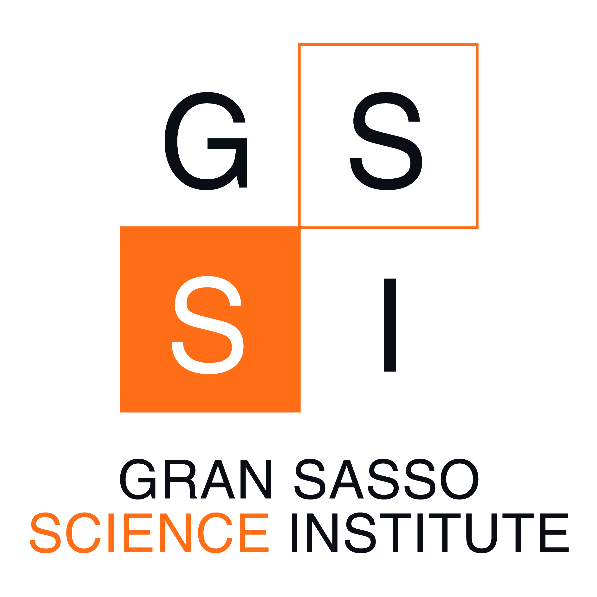

Fast analysis of long gravitational wave signals
1 Introduction

We offer the reader a tour of the gravitational wave science enabled by the study of compact binary coalescences. This field is wide and multi-faceted: we center our discussion on data analysis, which encompasses the statistical and computational methods used to infer the properties of the astrophysical objects whose emission we measure.
The relative simplicity of the data produced by gravitational wave detectors allows us to employ statistically robust Bayesian methods. Starting from a detailed discussion of these, we explore how they can help shed light on the properties of compact objects. We start from current gravitational wave detectors and then move to the ones whose construction is planned: each of these brings its own scientific potential, as well as new challenges.
Chapter 2 introduces the general tools required for inference; Chapter 3 illustrates how they can be applied to the analysis of timeseries. In both, we outline what approaches can improve computational efficiency, as well as how the robustness of our methods can be assessed.
The next three chapters summarize the main ways the data measured at the detectors can vary depending on the compact binary system that emitted it. In Chapter 4 we introduce the GW250114 signal, which as of this writing holds the record as the clearest-ever gravitational wave detection: we use it as our reference example wherever possible in later chapters. In Chapter 5 we outline how the signal produced by a compact binary merger is characterized, while in Chapter 6 we take it from the source to the detector, by discussing the geometric relation between us and the emitter.
Finally, in Chapter 7 and Chapter 8 we look toward the next decades with two concepts for future detectors. Their precise data in new frequency bands bring exciting scientific prospects, but they also come with high requirements for our data analysis infrastructure: the current approaches to the problem are not trivially extended, and advancements will be needed to ensure that we can draw robust scientific conclusions for a moderate cost in time and energy.
This thesis is simultaneously compiled with quarto into both HTML — as a static website — and PDF. The HTML version is interactive, with hyperlinks, the possibility to see internal and external references by mouse over, and a dynamic table of contents. Also, several figures are rendered from python code, which can be seen directly within the website, but is omitted from the PDF. This literate programming-like approach (Knuth 1984) allows for reproducibility and transparency. Its source code is publically available here (to be made public upon graduation).
1.1 Personal contributions
This thesis was deliberately written weaving established results and novel, personal contributions in order to improve its logical flow and, hopefully, its readability. This operation may obfuscate the distinction: this section adresses the problem by explicitly outlining it. For clarity, this is written in the first person; while in the rest of the thesis, the pronoun “we” is used. I opted for it because all the results presented were obtained with at least some degree of collaboration, even for the papers I led.
I am part of several collaborations: LIGO-Virgo-KAGRA, Einstein Telescope and Lunar Gravitational Wave Antenna. All three of these have recently published major works, which are formally authored by the whole collaboration.
The LIGO-Virgo-KAGRA collaboration recently concluded its fourth observing run, whose data is currently being analyzed. I was part of the team which wrote the discovery paper for the exceptional gravitational wave event GW250114 (Chapter 4) (Abac et al. 2025). I authored all figures in the main text except for figure 2, and co-authored figures 2 and 3 in the Supplement. I was also responsible for the data release (LIGO Scientific Collaboration 2025), as well as coordinating with the outreach team for the creation of various items, such as the infographic and image shown here. The analysis of this event helped in identifying an issue (Section 3.2.1) in the way parameter estimation was performed in the collaboration, and I contributed to the presentation and correctness of the paper which outlined its fix (Talbot et al. 2025). I also contributed to the collaboration in other ways, such as acting as an internal paper and waveform model reviewee. By writing an interface for the eccentric waveform model TEOBResumS-Dalí, I contributed to a reanalysis of the first gravitational wave event performed including both eccentricity and spin-induced orbital precession (Gamba et al. 2025).
The Einstein Telescope collaboration (Chapter 7) published a white paper (Abac et al. 2026) outlining the detector’s capabilities. I contributed to its section 8, with a discussion of the computational bottlenecks related to waveform evaluation. These are reported in this thesis’ Section 7.2, which also includes the results of a series of papers led by Filippo Santoliquido (Santoliquido et al. 2024; 2025a,b), related to population-scale data analysis with the Einstein Telescope. We collaborated closely, and besides editing all the text, I work on the theroretical aspects for many of them, like the theoretical Bayesian framework for the classification of binaries (Santoliquido et al. 2024) or the understanding of the arrival time bimodality with ET-\(\Delta\) (Santoliquido et al. 2025a).
The Lunar Gravitational Wave Antenna (LGWA) collaboration also published a white paper (Ajith et al. 2025). I contributed to sections of it relating to sky localization capabilities and the detection of binaries containing white dwarfs. The problem of performing parameter estimation with the LGWA has been a long-standing one. I included some preliminary results on it both in the white paper (Ajith et al. 2025) and in a work we published comparing different concepts for lunar gravitational wave detection (Cozzumbo et al. 2024); in the latter, I also contributed to the analysis of some concepts other than the seismic one, such as the effect of dust on an unshielded laser-interferometric detector. I led a paper on the generic solution to the LGWA parameter estimation problem (Tissino et al. 2026), where we show that it must generically be performed in a coordinate frame comoving with the Solar System Barycenter, which should be centered at a location close to the detector for better computational efficiency. I was also involved in a recent work on LGWA parameter estimation for a massive black hole binary (Iacovelli et al. 2026): I performed cross-checks to ensure that the analysis was consistent; indeed, the signal lasted for a short enough time in band not to require an accurate treatment of the lunar orbit around the Sun.
I contributed to the development and maintenance of the software package GWFish (Dupletsa et al. 2023), and in the validation of the parameter estimation forecasts it produced against GWTC-3 analyses (Dupletsa et al. 2025). I helped in constructing a procedure to extract information from summary data from the LHAASO collaboration (Banerjee et al. 2024).
Finally, this thesis includes (Section 5.5.3) the results from a paper I led (Tissino et al. 2023) related to surrogate modelling for the gravitational waveforms emitted by neutron star binaries.
1.2 Acknowledgements
While writing this thesis I benefited from the help of many mentors, colleagues and friends.
I would like to thank my supervisor, Jan Harms, as well as the referees who read through this thesis to ensure it was in the best shape possible: Enrico Barausse, Giovanni Benato, Isobel Romero-Shaw.
Several friends and colleagues also helped me with the thesis: I would specifically like to thank Pierpaolo Bilotto, Gregorio Carullo, Rossella Gamba, Sara Gliorio, Vishnu Sanjay, Filippo Santoliquido, Michael Williams.
Many more people supported me through these years, with a list that would be too long to make comprehensive. I would like to thank friends and family from the many communities I’ve had the honor of joining, in L’Aquila, Pordenone, Udine, Jena; as well as the many colleagues I have worked with, scattered throughout Europe and other continents.